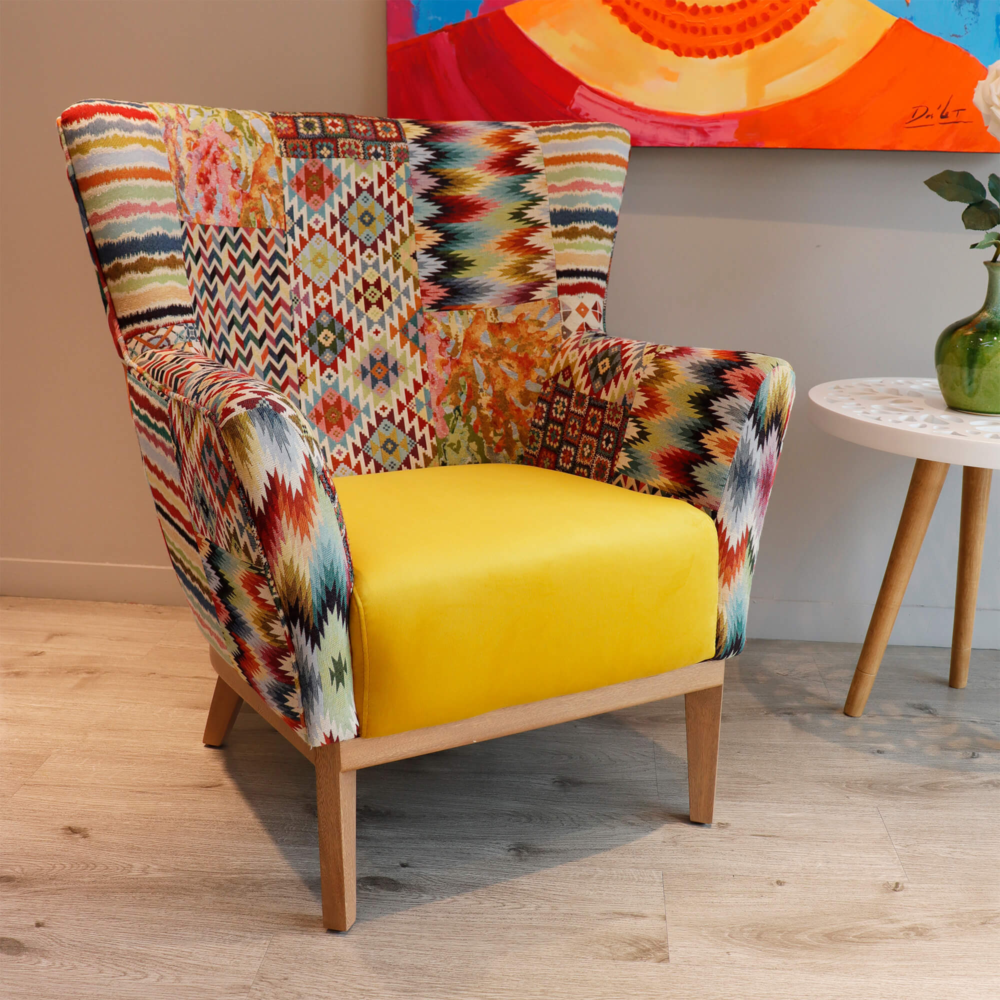
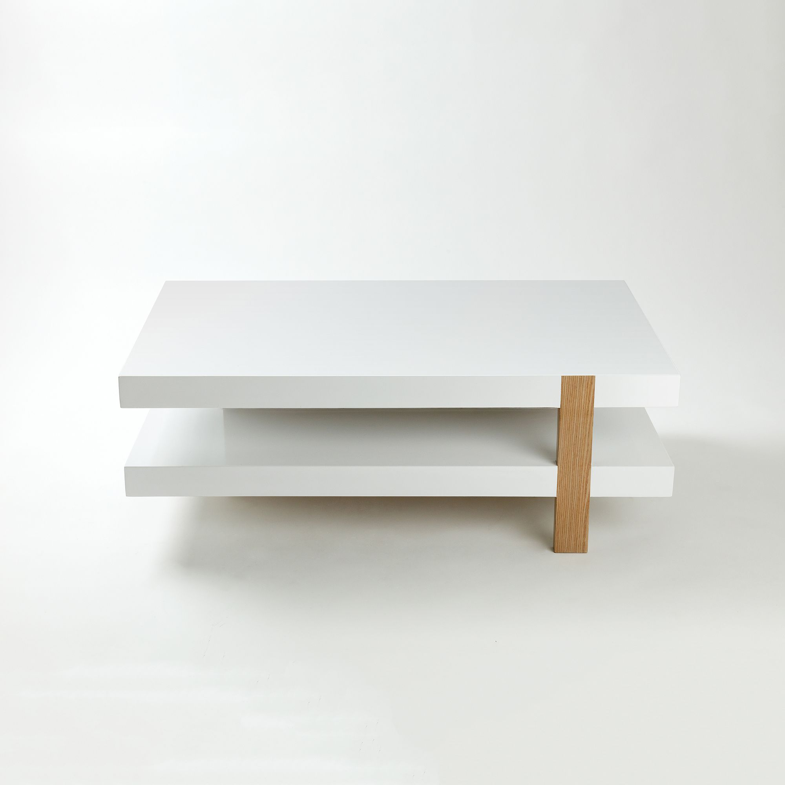
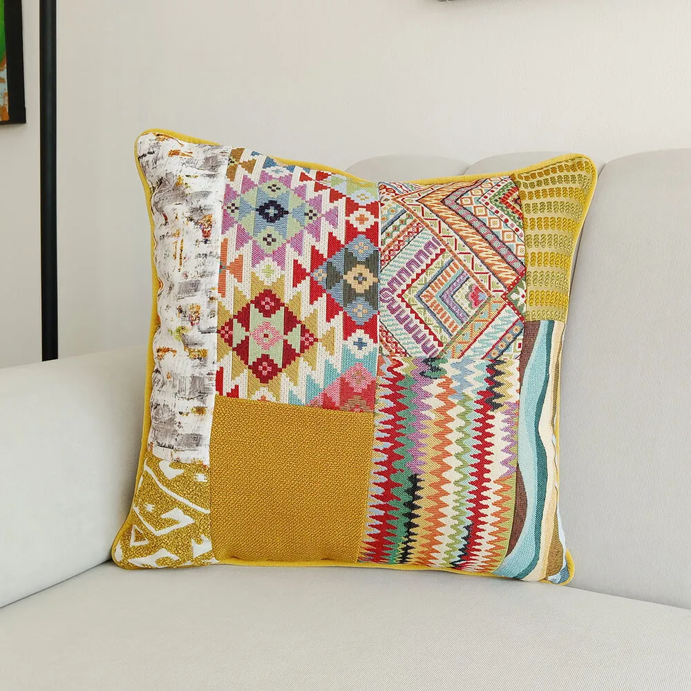
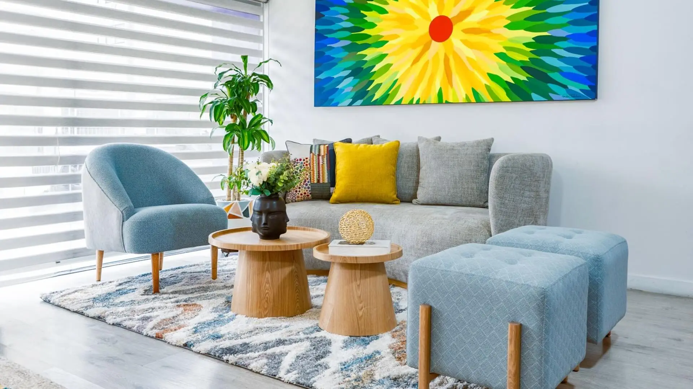

01
POLTRONA PATCHWORK
Mitchelli
Desde $2.670.000 COP
Color, textura y formas que merecen su propio espacio. Tres piezas de Kälida para componer un ambiente tuyo.
Explorar la selección ↓
Selecciona una, dos o las tres piezas.
El precio es una referencia para iniciar la asesoría.
Desde $2.670.000 COP

02$2.015.000 COP

03$230.000 COP
Un espaldar amplio y cóncavo. Tapizado patchwork. Estructura en madera y patas de Flor Morado. Una pieza para darle identidad a un rincón.
Medidas de la ficha oficial. El equipo de Kälida confirma materiales, acabados y condiciones de fabricación.
